The Villa Forni Cerato is a 16th-century villa in Montecchio Precalcino, Province of Vicenza, northern Italy. Its design is attributed to Andrea Palladio and his client is assumed to have been Girolamo Forni, a wealthy wood merchant who supplied building material for a number of the Palladio's projects. The attribution to Palladio is partly on stylistic grounds, although this is a complicated issue - the building departs from the Palladian norms.
History
The villa was probably built in the 1540s modifying an existing building on the site. The double name Forni-Cerato, which it is always given, dates back to 1610. In that year the building, which belonged to Girolamo Forni who can be regarded as having commissioned it, passed in accordance with a provision in his will into the ownership of Giuseppe, Girolamo and Baldissera Cerato. Both its attribution to Palladio and the assumption that Girolamo Forni had it built remain a matter of speculation. The first reference to the architect being Palladio is in the 18th century (when it was mentioned by the architects Francesco Muttoni and Ottavio Bertotti Scamozzi). However, modern research agrees almost unanimously with their opinion.

Design
Villa Forni Cerato is relatively small in size. The loggia stands out as the dominant part of the villa on the frontal facade. In a comparable manner to Villa Godi, a flight of steps reaches over the basement and leads up to the loggia, which opens in a serliana. This serliana takes up the entire width of the loggia. The central axis is clearer than at the Villa Godi, partly because of the fenestration. But it is not only in this respect that the Villa Forni Cerato marks a step forward in Palladio's development; for the first time the borders between the various storeys of the facade are clearly visible. Height is structured by the triple rhythm of the cellar storey, piano nobile and mezzanine storey. Although the front serliana appears in a simplified form, a ledge projects from the foundations of the wall at the side of the round arch which leads around the loggia and meets its counterpart, where motifs are concerned, in the upper ends of the windows. A double ledge runs below the windows and connects the loggia organically with the rest of the building. Apart from its structural function, it forms both the upper and lower conclusions of two balusters, which are positioned among the outer pilasters of the serliana. If one also takes into consideration the fact that the balusters visually balance out the outer pilasters of the serliana, then the Villa Forni Cerato appears as a building in which the subordination of individual facade details with regard to the entire facade, which was characteristic of Palladio's later development, is expressed for the first time.
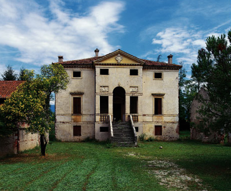
My project
The project is written in JavaScript but in the code are used functions implemented in Plasm.
These are the function used in the project:
- SIMPLEX_GRID
- ROTATIONAL_SURFACE
- CUBIC_HERMITE
- T, R, COLOR, STRUCT, DRAW
- POLYLINE
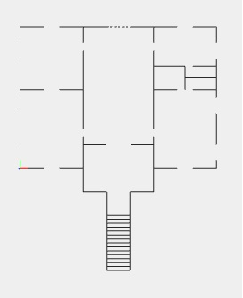
In the second phase, I started drawing the 3D model of the villa from the bottom and going up incrementally floor by floor. All geometric shapes without curves were drawn using the function SIMPLEX_GRID that in a very fast and efficiently allows to draw large and complex structures. To draw the roof, the arch of the porch, and the finish of the windows was used CUBIC_HERMIT function through the creation of the first lines of the surfaces and then allowed to draw accurate shapes that reflect the real ones. Finally I used the function to draw ROTATIONAL_SURFACE the railing of the porch.
In this phase, many measures have been obtained using proportions because they are not available on-line technical documents reveal that the measurements of the height of the walls or roof. These values were extrapolated from the photos, and using the right proportions are able to create a scale model to the original shapes and sizes.
Below show you some pictures where you can see the villa gradually taking shape incrementally from the bottom up.
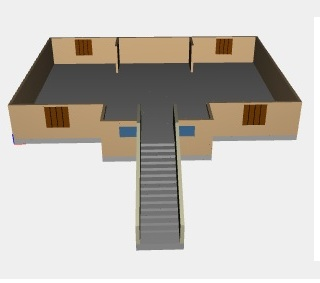 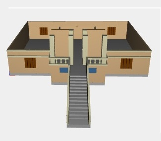 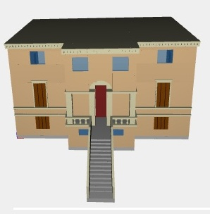
Here are some pictures of the villa over.
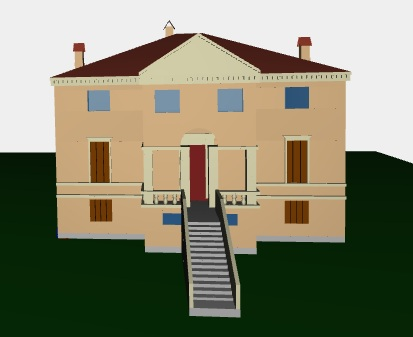 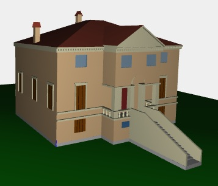
Here are some details that have been made to produce a more realistic 3D playback.
This image shows the columns of marble parapet made ROTATIONAL_SURFACE function.
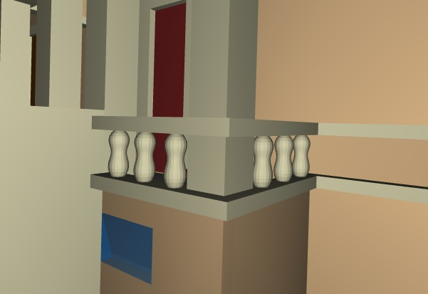
This image shows the arch of the porch and the finish of the door that takes up the front of the roof.
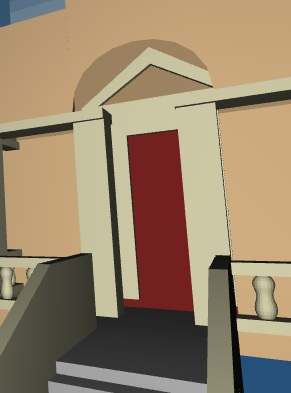
This picture shows the finish of the roof and the different inclinations of the sides of the roof of the villa.
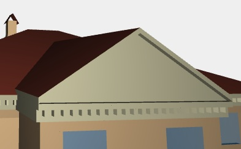
This picture shows the side and back of house with windows and chimneys.
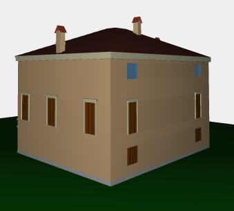